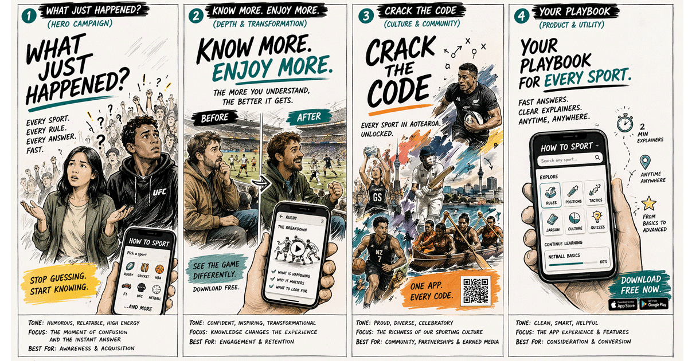
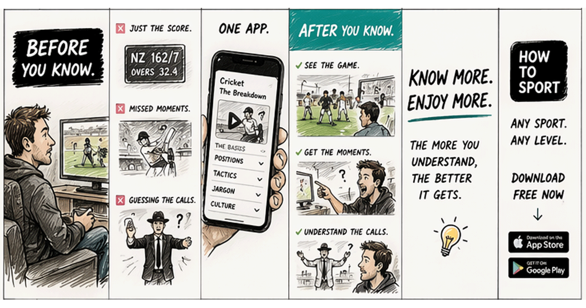

Confused about the rules? Not sure what just happened? How to Sport explains any sport at any level. One app. Every sport. Every level.

Sports Covered
Skill Levels
Free Access
Always Available

Ever been confused watching a sport? Missed a crucial moment and didn't understand what just happened? You're not alone.
How to Sport is designed to help fans at every level understand the rules, positions, and winning strategies for 50 popular sports. Whether you're a casual viewer or a dedicated fan, we've got you covered.
Download How to Sport today and never be confused about a sport again.
Made in Aotearoa 🇳🇿